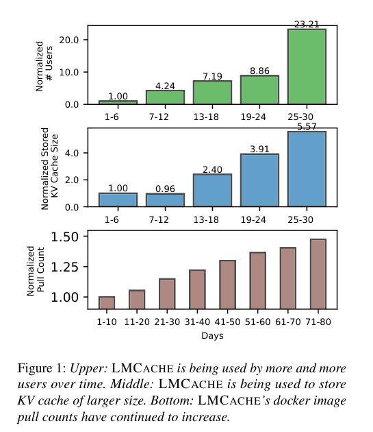
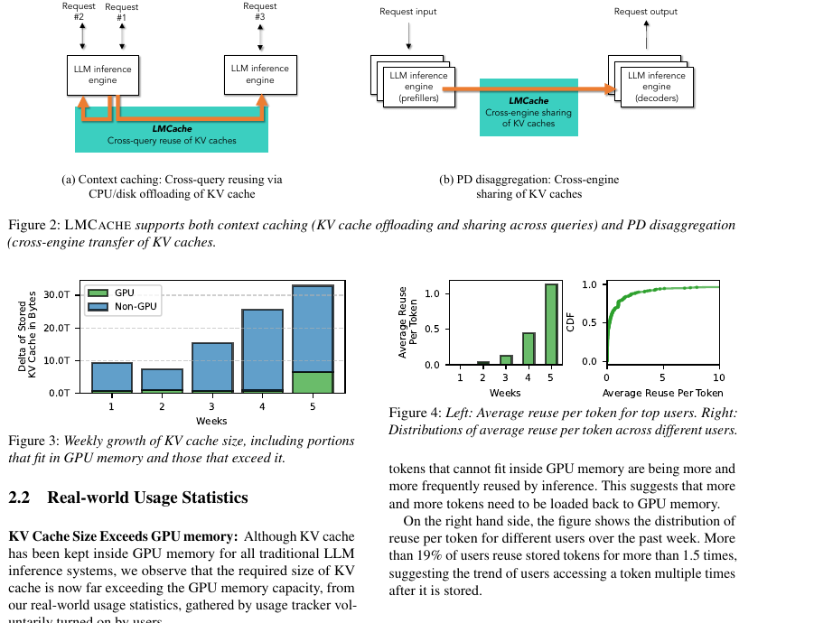
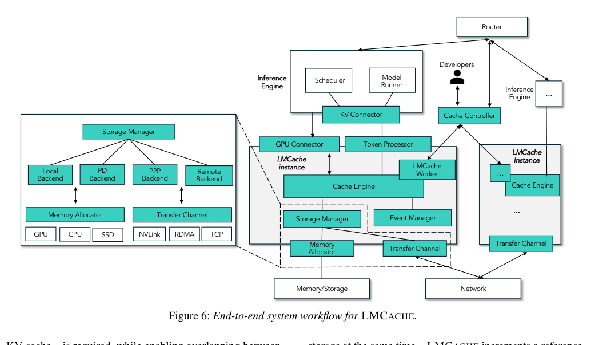
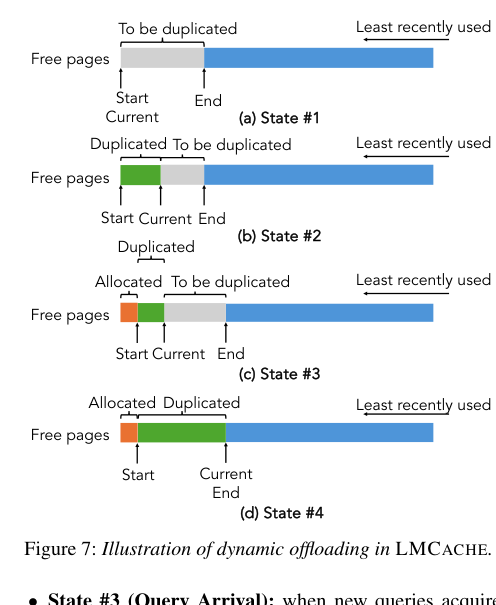
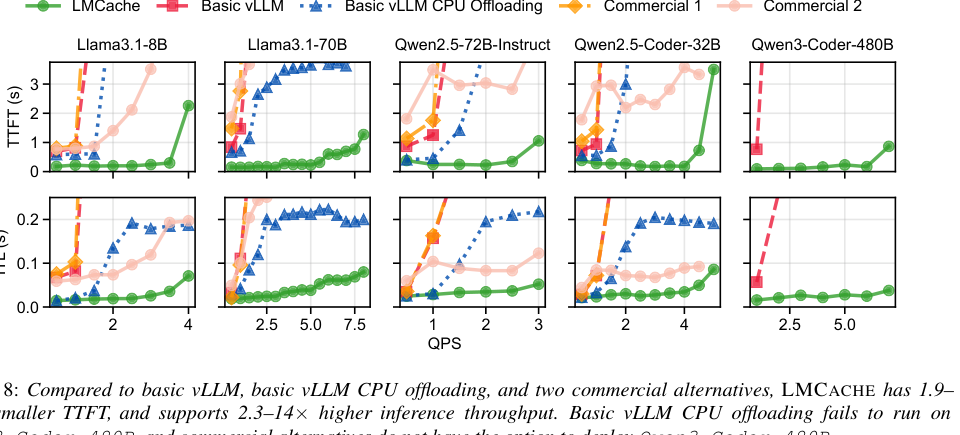
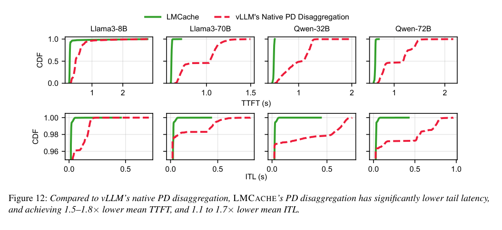

LMCache：企业级 LLM Inference 的高效 KV Cache Layer 中文翻译稿
摘要。KV cache 过去通常只存放在 GPU memory 中，用来加速 LLM decoding。但企业级 inference 正出现两个趋势：不同 queries 之间要复用相同 prefix 的 KV cache，prefill 和 decode 也越来越常被拆到不同 engines 或 GPUs 上运行。这要求 KV cache 能被高效地从 GPU 中抽取、存储、传输并重新加载。LMCache 是一个开源 KV caching layer，支持 vLLM 和 SGLang，能够在 GPU、CPU、local disk、remote backend、Redis 等层次之间移动 KV cache，并对上层暴露 pin、lookup、cleanup、movement、compression 等管理能力。实验显示，在 multi-round QA、document analysis 和 PD disaggregation 等场景中，LMCache 相对基础 vLLM 和商用替代方案可带来最高 15 倍 throughput 提升，并显著降低 TTFT 与 ITL。
1 引言
LLM inference 的增长已经超过训练，支撑客服、代码生成、RAG、文档分析和 agentic workflows。KV cache 是其中的核心中间状态。传统系统将它视为单个 query 生命周期内的 GPU 内部数据结构，但新型应用让 KV cache 跨 query、跨 engine 复用成为必要。
论文指出两类关键场景。第一是 cross-query caching：把共享 prefix 的 KV cache 持久化到更低层存储，后续 query 复用时避免重复 prefill。第二是 prefill-decode disaggregation：prefill GPU 产出 KV cache，decode GPU 负责 latency-sensitive generation，因此 KV cache 必须跨 engine 或跨 GPU 传输。

真实部署数据支持这个趋势：用户存储的 KV cache 总量持续增长，远超 GPU memory 容量；被移出 GPU 的 tokens 也越来越频繁地被重复访问。换言之，KV cache 不再只是 GPU 内部临时缓存，而是需要被视为可管理、可迁移、可复用的系统级数据。

2 动机与挑战
论文总结了高效 KV caching 的三类系统挑战。第一是 I/O inefficiency。现代 inference engines 采用 paged attention，KV cache 被切成许多小 pages，常见大小只有几十 KB。直接以 page 粒度存取无法打满带宽，而且会引入额外 CPU-GPU copy。
第二是 inference engine 快速演进。每周都有新模型、新 attention kernel、新 memory layout。若 KV caching library 与某个 engine 内部实现耦合太深，就需要频繁改适配层。LMCache 因此提供标准化 connector interface，把 cache layer 与 engine backend 解耦。
第三是缺少管理 API。query router、scheduler、operator 或应用层需要知道哪些 prefix 的 KV cache 在哪里，能否 pin、evict、compress 或 move。没有统一接口时，上层只能做粗糙 routing 和 eviction，导致重复存储、错误调度和不可预测的 cache behavior。
3 LMCache 概览
LMCache 位于 LLM inference engine 和异构 storage/network devices 之间。它的任务是提供统一、高性能的 KV cache movement and management substrate，同时兼容 vLLM 和 SGLang 等快速变化的后端。

Store workflow 中，新 query 先经过 KV connector 准备 tokenized prompt 和 GPU address metadata；token processor 判断哪些新 tokens 尚未存储；storage manager 通过 transfer channel 将这些 KV cache 保存到 backend。
Retrieve workflow 中，query 同样先经过 connector；token processor 识别 backend 中已经匹配的 prefix tokens；event manager 检查 query ID 和已有地址；若需要加载，GPU connector 从对应 storage tier 拉回 KV cache。Lookup workflow 则服务于 router 或 scheduler，它们可以查询某个 token prefix 的 cache 是否存在以及位于何处。
4 性能优化
LMCache 的第一个优化是 batched operations。它不按 inference engine 的小 page 逐个传输，而把多个 pages 组合成更大的 chunk，默认可达到 256 tokens per chunk。存储时，系统先用 CUDA kernel 将散布在 GPU paged memory 中的 KV cache 拷贝到连续 streaming buffer，再由 DMA engine 批量写入低层存储；加载时则反向进行。
第二个优化是 compute-I/O overlap。LMCache 采用 layer-wise pipelining：在第一层执行 inference 时，下一层的 KV cache 可以异步载入 buffer 并转换为 paged layout。它也支持 request-level asynchronous loading，在请求真正开始 inference 前利用排队等待时间预取 KV cache，从而降低实际服务时的 loading delay。
第三个优化是 minimum data copy。当 KV cache 同时写入多个目的地，例如 CPU memory、local disk、remote backend 时，LMCache 通过 reference counter 和零拷贝式设计避免重复复制数据。对于现代 engines 维护的 free GPU pages，LMCache 还实现 dynamic offloading，仅复制 free pages 的子集，减少额外内存压力。

5 Connector 与 Controller 接口
Connector interface 让 LMCache 能接入不同 inference engine。论文列出一组函数，例如 get_num_new_matched_tokens 查询 backend 中可命中的 cache token 数，update_state_after_alloc 更新某 query 是否需要从 backend 转移 KV cache，build_connector_meta 生成 transfer metadata，start_load_kv 和 wait_load_kv 启动并同步加载，start_store_kv 和 wait_store_kv 则处理 offloading。
Controller API 把 KV cache 暴露成一等可管理对象。上层可以执行 lookup、pin、move、compress、delete、clear 等操作。这样 query router 可以做 KV-cache-aware routing，operator 可以 pin 热门文档，agent framework 可以识别和移动特定内容对应的 KV cache。
6 实验评估
LMCache 的实验覆盖单节点 CPU offloading、real-trace driven evaluation、centralized storage server、PD disaggregation、component-wise evaluation 和 sensitivity study。指标包括 TTFT、ITL、throughput、loading bandwidth 和 tail latency。

在 single-node CPU offloading 中，LMCache 在多个模型上都降低 TTFT 和 ITL。论文给出的核心解释是：basic vLLM 只把 KV data 保存在 GPU 中，可命中容量有限；basic vLLM CPU offloading 虽能迁移到 CPU，但 per-layer、per-16-token transmission 无法充分利用带宽；LMCache 以 chunk 粒度加载并使用高性能 CUDA kernels，因此命中率和带宽利用率都更高。
Real-trace evaluation 中，LMCache 在不同 QPS、不同模型和真实公司流量分布上持续优于 basic vLLM。论文报告在五个模型的高 QPS 区间，LMCache 将 TTFT 至少降低 3.7 到 6.8 倍，ITL 至少降低 19% 到 58%。在 remote backend offloading 场景中，LMCache 相对 basic vLLM 在相同 TTFT 下提升 1.3 到 3 倍 inference throughput。

在 PD disaggregation 中，LMCache 把 prefiller 产生的 KV cache 以 chunk 方式高效传给 decoder。相比 vLLM native PD disaggregation，论文报告 mean TTFT 降低 1.53 到 1.84 倍，mean ITL 降低 1.12 到 1.66 倍。component-wise breakdown 表明，收益主要来自更低 transmission latency 和更好的 asynchronous compute overlap。
7 真实部署经验
论文的部署经验很有价值。第一，remote storage loading 并不总比 full prefill 慢。随着对象存储和 remote backend 带宽提升，在长上下文场景中加载已有 KV cache 可能直接低于重新 prefill 的成本。第二，context truncation 会显著降低 prefix cache hit ratio，因为截断后的输入不再与已缓存 prefix 对齐。真实 trace 中，某些场景 prefix hit ratio 会从约 85% 降到 45%。
第三，生产环境更偏好 containerized deployment。许多企业用户直接使用官方 Docker images，而不是深度修改 LMCache 源码。第四，生产中的 prefix cache hit rate 往往高于预期。现代 coding assistant、chat application 和 RAG pipeline 产生大量 dynamically reusable contexts，不只是固定 system prompt 可复用。
8 结论与选题启发
LMCache 将 KV cache 从 engine 内部临时状态提升为分布式系统中的一等数据结构。它的贡献不只是某个 cache policy，而是把 movement、storage、connector、controller 和 deployment lessons 组织成可复用 layer。论文表明，面向 agentic workflows 和企业应用时，KV cache management 应与 scheduler、router 和 storage hierarchy 协同设计。
对本仓库方向的意义。若研究多智能体调度或 state locality，LMCache 可以作为“底层 cache substrate”参考。它提供了上层调度器需要的 API：查询 cache 是否存在、位置在哪里、是否可移动、是否可 pin 或压缩。未来选题可以把 workflow-level scheduler 与 LMCache-style controller 结合，研究 query routing、cache retention 和 tier placement 的联合优化。
局限是论文偏系统工程，理论模型较少。它说明了生产瓶颈和 API 形态，但如何根据 future reuse probability、deadline 或 workflow DAG 结构做最优 cache orchestration，仍需要新的调度模型。
参考说明
参考文献保留在原 PDF 中。本文译稿主要覆盖摘要、引言、动机、挑战、LMCache 架构、性能优化、connector/controller 接口、实验结果和真实部署经验。